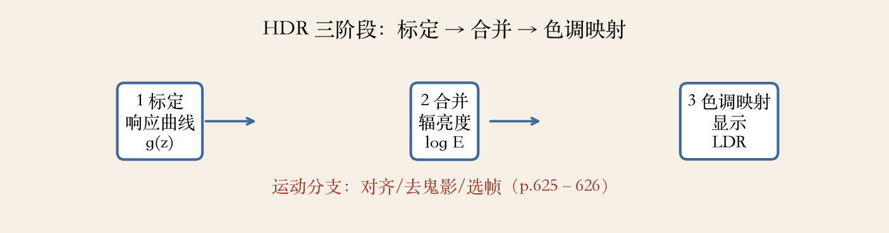
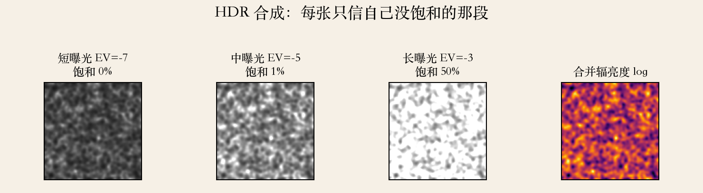
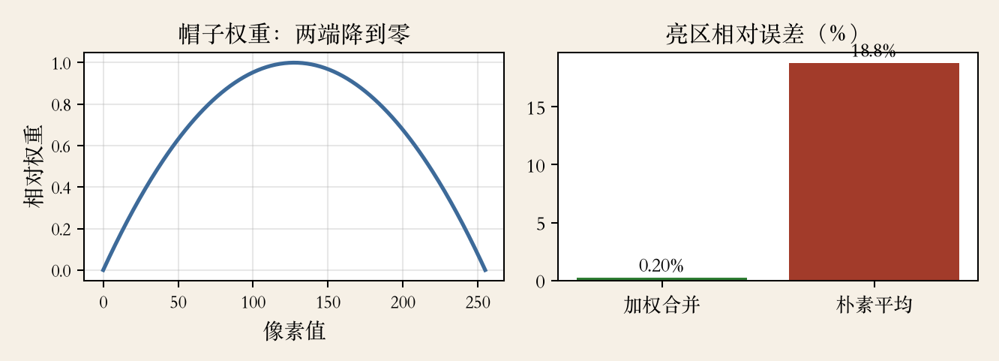

第 10 章 · HDR 合成
一张照片装不下整个场景
室内看窗外：窗外过曝，室内太暗。
8 位照片装不下场景的亮度范围。
多拍几张，各取看得清的部分。
合成辐亮度图，再决定怎么显示。
依据：原书第 620 页
问题与解法
单张：顾此失彼
包围曝光：多拍几张
合并：按可信度取像素
正课第八十五集
01 / 12
第 10 章 · 自动包围曝光
AEB：故意欠曝和过曝
自动包围曝光拍一组不同曝光。
通常改快门，不改光圈。
改光圈会连带改暗角和景深。
±2 EV 是常见的折中。
依据：原书第 620–621 页
拍摄要点
固定构图和白平衡
曝光时间按 1/2 的幂走
张数越多，对齐越麻烦
正课第八十五集
02 / 12
实验图 · 三阶段
三阶段：标定、合并、映射
先从对齐图像估辐射响应曲线。
再选或混合像素，得到辐亮度图。
最后色调映射回可显示范围。
运动分支：对齐、去鬼影、选帧。
依据：原书第 621 页

HDR 三阶段：标定响应曲线、合并辐亮度、色调映射｜程序生成，未用教材或论文原图
正课第八十五集
03 / 12
第 10 章 · 响应方程
方程：把乘法变成加法
像素值 z 是响应函数 f 作用于 E·t。
取反函数再取对数，得到 g(z)。
未知数是每个像素的 logE 和 g。
多张曝光给足方程，一起解。
依据：原书第 622 页
g(z) = logE + logt
z：像素值；E：辐亮度；t：曝光时间；g：响应曲线
正课第八十五集
04 / 12
第 10 章 · 帽子权重
中间像素更可靠
像素值在中间段更可靠。
接近饱和时响应函数会奇异。
帽子权重两端降到零。
加权最小二乘，再加平滑正则。
依据：原书第 623 页
两个参数
权重：谁更可信
正则：曲线多平滑
λ 太大太直，太小会抖
正课第八十五集
05 / 12
第 10 章 · 合并辐亮度
合并：按可信度投票
响应曲线估好后，把曝光图合并。
每张曝光翻译成辐亮度。
再按帽子权重做加权平均。
饱和或全黑像素权重为零。
依据：原书第 624 页
合并式子
分子：w 乘 (g(z) − log t)
分母：权重之和
只有一张可信时，退化成选帧
正课第八十五集
06 / 12
实验图 · 包围曝光
每张曝光只信一段
短曝光保住高光。
长曝光保住暗部。
中曝光两头都兼顾。
合并图取各自可信的部分。
依据：本集实验

短、中、长曝光与合并辐亮度：饱和从 0 升到 50%｜程序生成，未用教材或论文原图
正课第八十五集
07 / 12
第 10 章 · 鬼影
鬼影：同一像素不是同一物
手持或运动物体会让画面对不齐。
直接平均会出半透明鬼影。
先做全局配准，再做局部光流。
还要检查运动一致性。
依据：原书第 625 页
两种处理
对齐：配准加光流
选帧：只信一张
工程上常用中位数投票
正课第八十五集
08 / 12
第 10 章 · 大运动
大运动：先选帧，再补缺
相机大幅平移时，光流也可能不够。
先找共识拼图，选一张参考帧。
只在欠曝或过曝区域补算辐亮度。
运动太大时，只能做选帧 HDR。
依据：原书第 626 页
参考帧怎么选
通常选中间曝光
兼顾高光和暗部
参考帧也过曝就换一张
正课第八十五集
09 / 12
本集实验 · 五张曝光
加权合并与朴素平均
五张模拟曝光，EV 从负七到负三。
gamma 2.2，无噪声，无对齐误差。
动态范围约 63 倍，最长曝光饱和 50%。
加权误差 0.22%，亮区朴素平均 18.8%。
依据：本集实验
实验读数
覆盖率 100%
相关接近 1
帽子中心/边缘 13.0×
正课第八十五集
10 / 12
实验图 · 帽子权重
权重决定谁有资格投票
中间像素权重大。
两端像素权重为零。
饱和像素不参与合并。
亮区误差 0.22% 对 18.8%。
依据：本集实验

帽子权重曲线；亮区误差 0.22% 对 18.8%｜程序生成，未用教材或论文原图
正课第八十五集
11 / 12
第 10 章 · 收束
HDR 合成：三阶段与两条提醒
标定曲线、合并辐亮度、色调映射。
合并按可信度加权。
有运动先对齐，或者选帧。
下一集：色调映射怎么塞回屏幕。
依据：原书第 620–626 页
下一集
全局与局部色调映射
HDR 不等于更亮
先把信息拿全，再谈观感
正课第八十五集
12 / 12